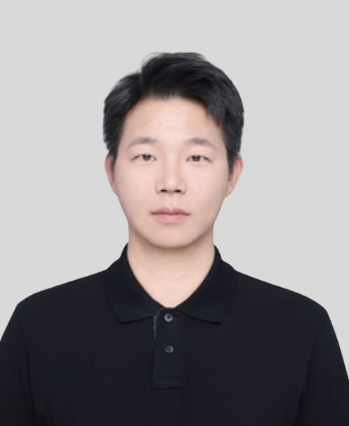

课题组简介
揭示胶体尺度下，活性与非活性体系中复杂结构与功能的微观形成机制；研发面向实际应用的仿生可持续材料。主要研究方向为： 1，受限空间下的胶体自组装 2，细菌运动机制及其群体行为 3，基于乳液的动态可编程软材料 4，基于微生物的光子晶体材料
研究方向
- 方向一：受限空间下的胶体自组装
- 方向二：细菌运动机制及其群体行为
- 方向三：基于乳液的动态可编程软材料
- 方向三：基于微生物的光子晶体材料
团队成员

PI / 课题组负责人：
王骏威 教授
邮箱：jwwang@eitech.edu.cn
教育经历：2016/09 - 2021/09: 博士 德国埃尔朗根纽伦堡大学 生物与化学工程学院 2013/09 - 2016/09: 硕士 德国埃尔朗根纽伦堡大学 生物与化学工程学院 2009/09 - 2013/09: 学士 同济大学 材料科学与工程学院
工作经历：2021/09 - 2022/02: 博士后 德国埃尔朗根纽伦堡大学 生物与化学工程学院 2022/03 - 2023/10: 博士后 英国剑桥大学 化学系 2023/10 - 2025/01: 课题组组长 德国马克斯普朗克所胶体与界面所
博士生： 李四、王五
硕士生： 赵六、钱七
论文成果
- Zhang S., Li S., Wang W. Title of paper. Journal Name, 2026.
- Li S., Zhang S. Another paper title. Conference / Journal, 2025.
招生招聘
本课题组长期欢迎对 XXX 方向感兴趣的本科生、硕士生、博士生和博士后加入。 请将简历发送至：your_email@university.edu.cn
联系方式
地址：XXX大学 XXX学院 XXX楼
邮箱：your_email@university.edu.cn